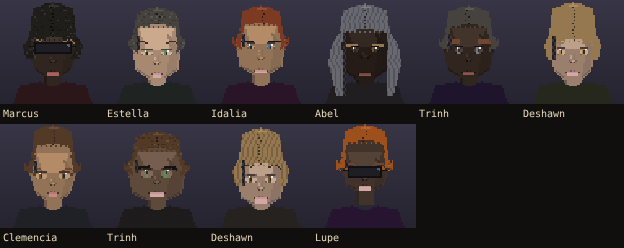
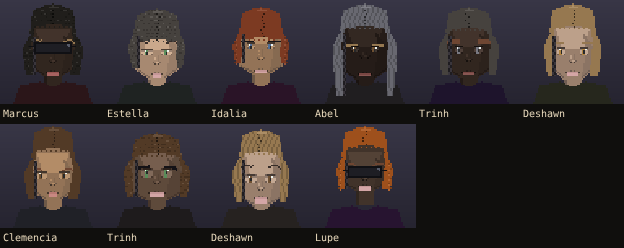

Real faces out of your game. The same ten people, before and after.
Estella Gaines stopped you at your own door with a face that looked like an old man.


These are only the ten who were wrong. Most people were already fine and did not change.
| People on the block with a name | 58 |
| Faces wearing a cut that fought the name, before | 10 |
| After | 0 |
Nothing was forced. Six of the eleven haircuts in your game get worn by anybody, and they still do. Only the three clipped tapers and the two long falls got pointed at the names they suit. Three names in the bank read both ways on purpose, Kai, Sunny and Juniper, and they are steered by nothing.
Your game does not know who
is a man and who is a woman. Not on the person, not on the body, not in the name
list, not on the face. A name was the only thing in that whole picture saying
"she", and nothing was listening to it. So I marked the names, which is a fact
about the names you already approved, and the face listens now.
It is only the haircut so far. The faces still do not read as clearly as they
should, because there is one body in this game and no other dial to turn yet.
If you want the faces to go further than the hair, say so and that is the next
job.